The app suite for easier management than ever
Purchasing, invoicing, vendors, duty of care, time tracking… Discover the design process that simplified the way the intellectual-services ecosystem is managed.
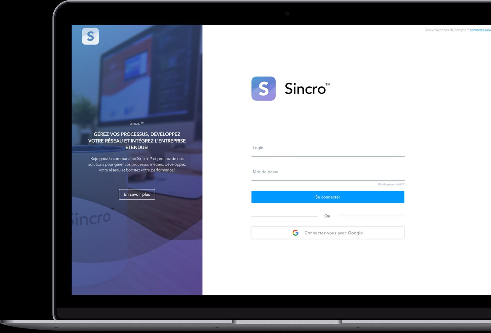
The mission
Sincro connects the players of the intellectual-services industry within its SaaS management and intermediation platform, providing them with the tools and services to collaborate in a secure, interconnected environment.
In the ultra-competitive ERP market, Sincro set itself the goal of being the all-in-one SaaS platform enabling all its users to boost and simplify their daily activity. In this context, the main challenge was to redesign and build a product suite serving the different business lines.
Unify the solutions through a single experience
Create the image & branding
Build a scalable design system
Rethink and create the business features
My role
As the very first employee hired as a UX/UI Designer at Sincro, I had the privilege of carrying out several major missions for the startup's growth. My journey began with user research, continued with product design, and involved a significant evolution of the user experience by introducing key features, ultimately leading to a complete redesign of the user interface (UI). During this enriching experience, I also played an essential role in creating the visual identity of the Sincro brand, of which we are extremely proud today. I also worked closely with the technical, marketing and sales teams, raising their awareness of user-experience matters while supporting them with my design skills. In conclusion, this experience gave me the opportunity to work within an exceptional team, notably alongside the multi-hat co-founder acting as CTO, Product Manager and Sales, Damien Mordaque, as well as founder Lionel Frizon, and all the development and business teams, around twenty people in total.
Main tasks
- Strategic design: Business x Product
- UX Researcher: Interviews, Personas, Experience Maps, Card sorting…
- Brand Designer: Branding
- UX Designer: Userflows, Wireframing, A/B testing
- UI Designer: Final interface design, Design System
Secondary tasks
- Motion Designer: Animations
- Graphic Designer: Communication and slide decks
- Design evangelist: Workshop facilitation & knowledge sharing
Design & Research Toolkit
 Miro
Miro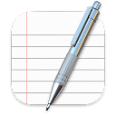
Board InterviewSurvey
InterviewSurvey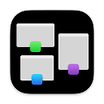
Card sorting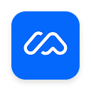
Maze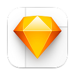
SketchZeplin Figma
Figma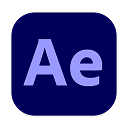
After EffectsPlanning
We mostly worked in an agile format, in 3-week sprints. Below is an example of how one of our Design sprints unfolded.
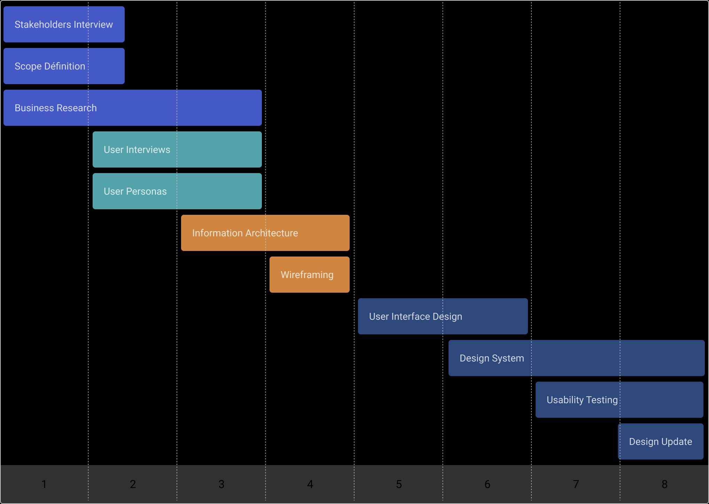
Research deck
Experience Map
For every partial redesign of the product and every new feature, we organized several workshops to deepen our understanding of users' expectations and behaviors. Whether by creating experience maps, running individual interviews, organizing card-sorting sessions or using the "6 to 1" method, these approaches and methodologies gave us a better understanding of our users and their expectations within their line of business.
Here is an example of an experience-map creation workshop we ran with a panel of 10 users ahead of the redesign of the Sourcing product.
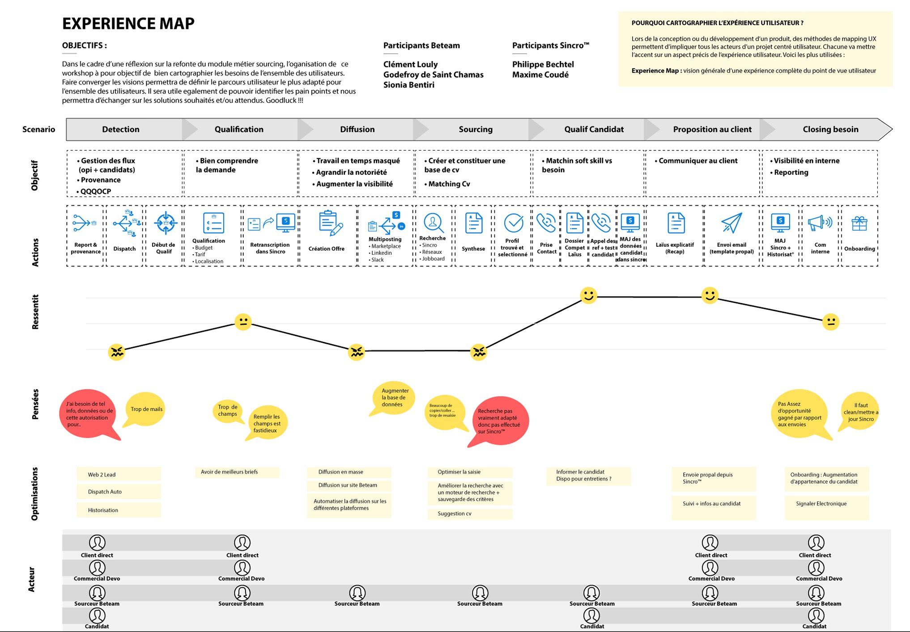
Site Map
I also materialized the site map of the entire solution to share it with the whole product team. For every new feature, this allowed us to define a hierarchical representation of pages and features in order to optimize the user experience. This exercise guarantees a logical organization, better accessibility and a quick understanding of the structure, which ultimately helps increase user satisfaction and experience and fosters retention on the platform.
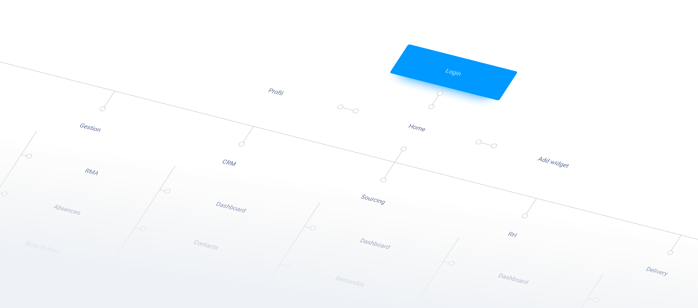
The solution
Dashboard
The customizable dashboard provides every user with a global view of their activity through interactive widgets. The widgets surface the essential information users need to do their job day to day. Combined with a notification center and a search engine, it guides and facilitates user actions and makes the experience even smoother.
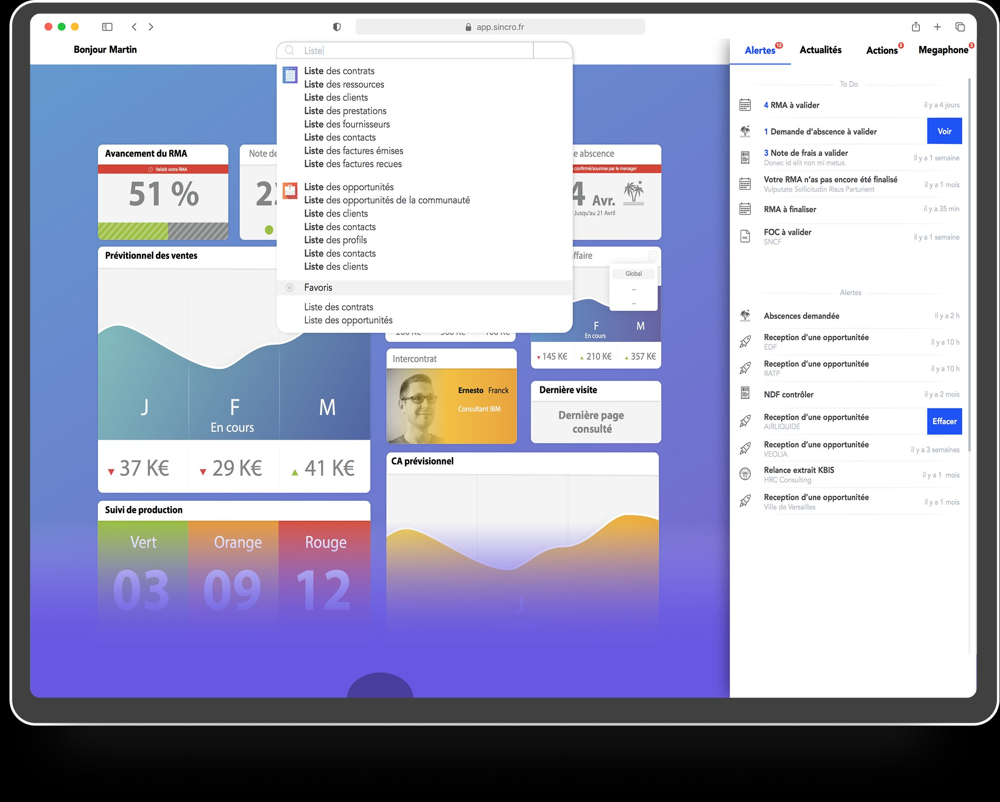
Contracts list
In the management module you will find a list of sales contracts. This list is highly customizable, allowing users to get an overview, manipulate it and carry out individual or bulk actions as needed.
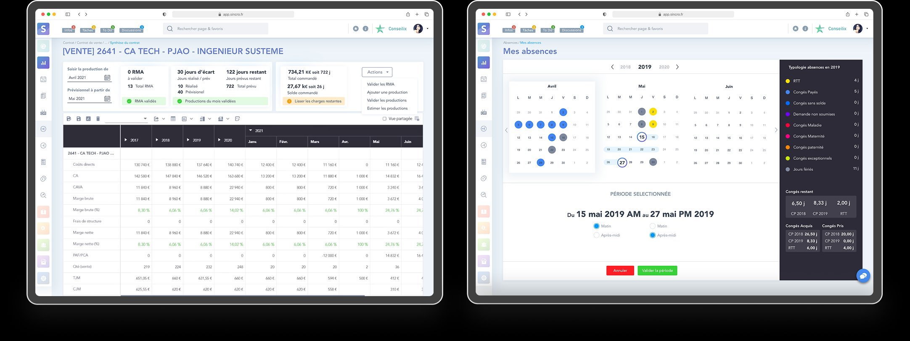
Marketplace
Boosting the business means fostering growth thanks to the solution's ability to connect talents with each client's entire network. The Sincro Marketplace is a hub centralizing needs that every member company has the opportunity to answer by proposing highly qualified resources.
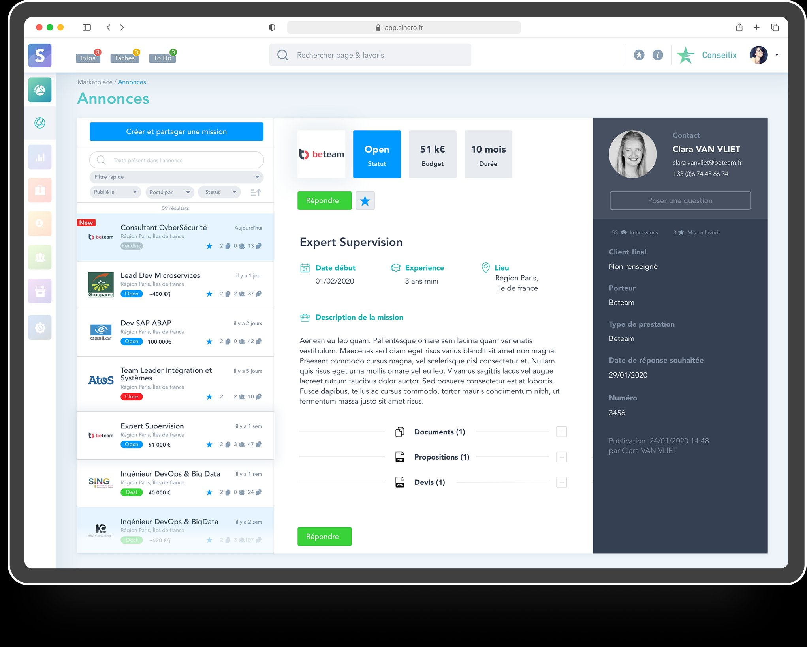
Design system
I led, transversally, the design and continuous update of the Sincro Design System. This documentation source allowed all our product and technical teams to dramatically improve our delivery velocity.
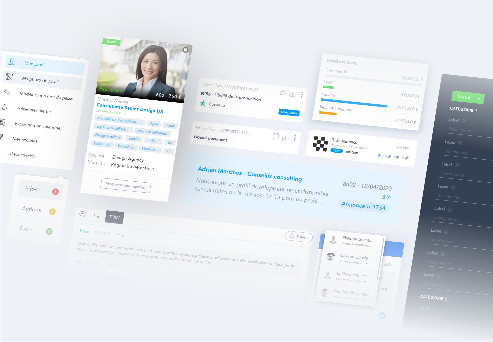
Prototype
Find the prototype on Figma. For confidentiality reasons the prototype is not accessible at the moment.